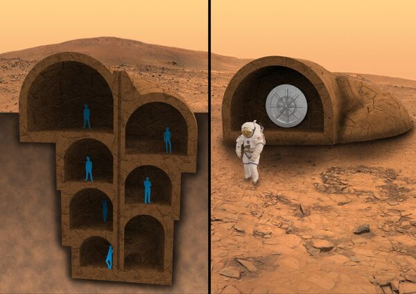

Як колонізувати Марс?
Загальні відомості про планету
Марс - четверта за віддаленістю від Сонця і сьома за розміром планета Сонячної системи. Особливостями поверхневого рельєфу Марса можна вважати ударні кратери на кшталт місячних, а також вулкани, долини, пустелі та полярні льодовикові шапки подібні до земних.
Планетарні протистояння
Марс найближчий до Землі під час протистояння, коли планета знаходиться на небі у напрямку, протилежному Сонцю. Протистояння повторюються кожні 26 місяців у різних точках орбіти Марса та Землі. Оскільки спосіб забезпечення життєдіяльності колоністів потрібно оцінити з хімічної точки зору, спосіб їхнього попадання на планету ми не розглядаємо. Але яких би висот не досяг космічний транспорт, закони збереження механіки обмежують періоди польотів, прив'язуючи їх до планетарних протистоянь. Тому оптимальний період, протягом якого колоністи повинні вижити на Марсі становить саме 26 місяців. Розглянемо колонію з 15 осіб.
Атмосфера Марса
Атмосфера Марса, що складається переважно з вуглекислого газу, дуже розріджена. Тиск на поверхні Марса в 160 разів менше земного. Розрідженість марсіанської атмосфери, відсутність магнітного поля та озонового шару є причиною того, що рівень радіації на поверхні Марса суттєво вищий, ніж на Землі. Таким чином, за один-два дні космонавт на поверхні Марса отримає таку ж еквівалентну дозу опромінення, яку на Землі він отримав би за рік. Тому людина зможе прожити лежить на поверхні Марса без захисного спорядження, привезеного із Землі.
Першочергові задачі колонізації
- Виробництво енергії
- Побудова укриттів
- Добування води
- Синтез кисню для дихання
- Виробництво продуктів харчування
Виробництво енергії
Марс має період обертання та зміну пори року, аналогічні земним, але його клімат значно холодніший і сушіший за земний. Тому енергія великою мірою потрібна буде для обігріву укриттів. Може використовуватися ядерна чи сонячна, вироблена з допомогою сонячних батарей.
Побудова укриттів
Будинки для колоністів можуть являти собою щось на зразок іглу. Технічно, "крижаний будинок на Марсі" - надувна конструкція з оболонкою з водяного льоду. Побудувати її можна буде із матеріалів, витягнутих із надр планети. Перевага конструкції полягає в тому, що її легко транспортувати. Чому крига? Вода – чудовий захисний матеріал від радіації, а саме вона – одна з найбільших небезпек, з якими стикаються люди під час космічних польотів. Тривалий вплив радіації може спричинити рак або променеву хворобу. Є й альтернативний варіант: помістити житлові та робочі будинки під поверхнею Марса, або доповнювати їх спеціальними захисними покриттями, наприклад, керамічним, створеним з місцевого ґрунту за допомогою технології 3D-друку. Найкращі місця для колонії тяжіють до екватора та низовин.
Добування води
Великі поклади водяного льоду існують під поверхнею Марса, а також на поверхні на полюсах планети, де він змішаний із сухим льодом, замороженим CO2. Значні запаси води зберігаються на південному полюсі Марса, якби вони розтанули, міг утворитися глобальний планетарний океан глибиною 11 метрів.
Синтез кисню для дихання
Більшість кисню в атмосфері Марса міститься у формі двоокису вуглецю (CO2), який є основним компонентом
атмосфери. Молекулярний кисень (O2) існує лише у залишкових кількостях. Значні запаси елементарного кисню також
зустрічаються в оксидах металів на поверхні Марса, а також у ґрунті, у формі пернітратів. Вже було створено
наукові розробки з твору кисню з атмосфери Марса: це девайс, що створює кисень за принципом дерев — вдихає
вуглекислий газ, а видихає кисень. Спочатку він втягує в себе марсіанське «повітря» спеціальним насосом, потім
за допомогою електрохімічного процесу відокремлює один атом кисню від кожної молекули вуглекислого газу. Для
такої конверсії потрібні високі температури — близько 800°C.
Для перетворення води на кисень і водень міг
би
бути застосований електроліз, якби було достатньо рідкої води та електроенергії: 2Н2О = 2Н2↑ +
О2↑.
Альтернативні підходи є, наприклад, кисень можна отримувати з рослин, вирощених безпосередньо на Марсі. Вже
ведуться роботи зі створення таких рослин, які зможуть вижити за умов Червоної планети. В основі лежить ідея
поєднати особливості мікроорганізмів екстремофілів, які можуть жити в найнесприятливіших умовах на Землі, з
рослинами. Для цього використовується техніка генетичного поділу - необхідні гени відокремлюються від
екстремофілів та впроваджуються в рослини. Але навіть такі гібриди неможливо посадити в самий ґрунт Марса, але,
ймовірно, вдасться виростити в теплиці на марсіанській базі, хоча й там умови все одно будуть далекі від
земних. Якщо експеримент пройде успішно і гібриди приживуться на Марсі, вони зможуть забезпечити астронавтів
киснем, їжею і навіть ліками.
Виробництво продуктів харчування
Елементний склад поверхневого шару марсіанського ґрунту, визначений за даними посадкових апаратів, неоднаковий у різних місцях. Згідно з даними зонда НАСА «Фенікс», співвідношення pH та деякі інші параметри марсіанських ґрунтів близькі до земних, і на них теоретично можна було б вирощувати рослини, він цілком підходить для вирощування спаржі. Але для вирощування інших рослин та тварин у їжу потрібні герметичні теплиці та добрива, привезені із Землі.
Тераформування Марсу
Якби ми розглядали триваліший термін проживання колонії на Марсі, можна було б розпочати тераформування
планети. Його основні завдання це: підвищення тиску атмосфери рівня, у якому вода могла б існувати у рідкому
вигляді; підвищення температури в екваторіальній частині планети до +10 ° - +20 ° С; створення аналога
озонового шару для захисту від ультрафіолетового випромінювання; створення біосфери; створення повноцінного
магнітного поля планети. У міру здійснення тераформування умови на поверхні Марса стануть вже більш прийнятними
для перебування там без скафандрів і навіть після створення повноцінної атмосфери без дихальних масок.
Однак
цей процес займе досить довгий час: вчені вважають, що для того, щоб, зокрема, повітря стало
придатним для
дихання на Марсі, знадобиться за нинішніх технологій від 300 років до цілого тисячоліття, а за менш
оптимістичними оцінками, це займе мільйони років.